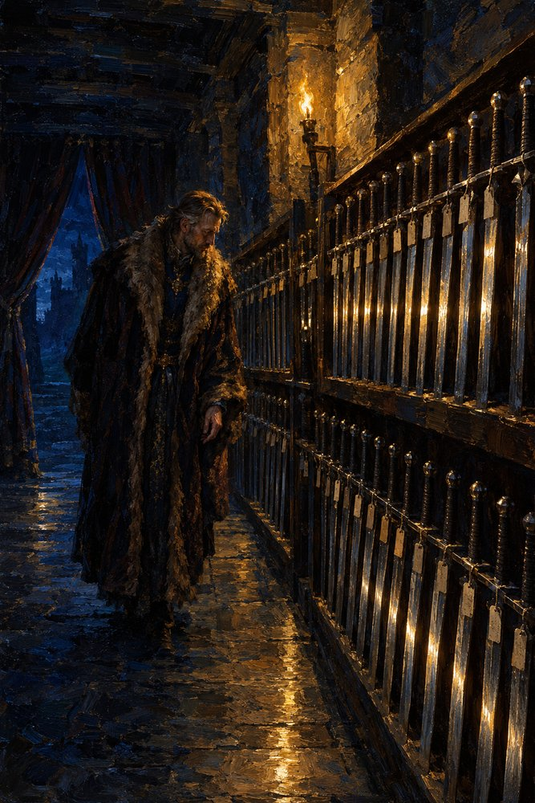

Record 10 of 15
The doorless armory
At night in the armory at Tarnhall Waldo, Duke of Tarnwald walks the row alone, counting his eighty-eight identical swords, one hand not touching; the entrance has a curtain and no door.
A long stone armory at night with a heavy curtain drawn aside from the entrance, tall black oak racks along the wall holding rows of identical plain swords with small tags that catch the rushlight in a long gleaming line, and a stooped man in a fur-trimmed gown walking the row alone with one hand held back.